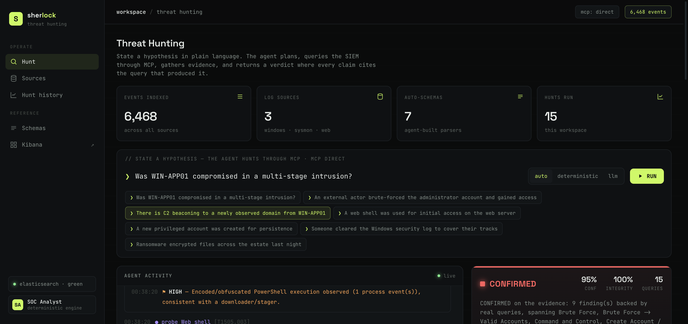
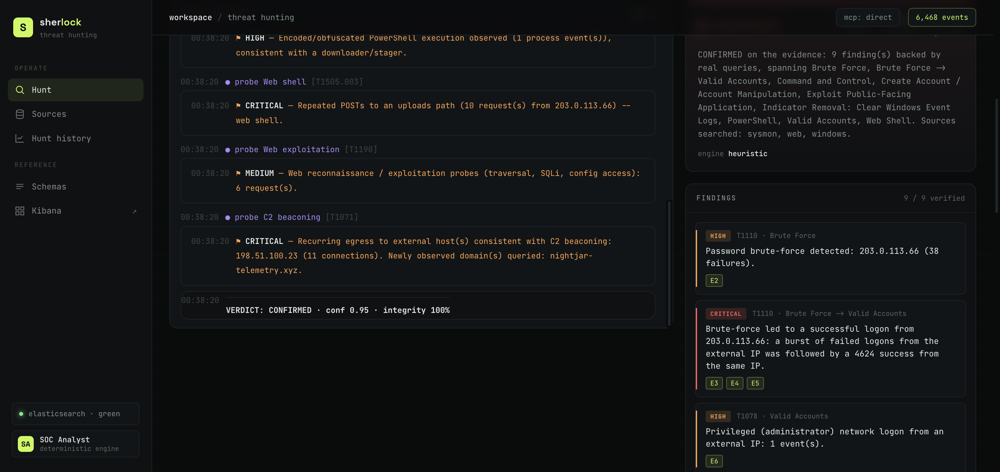
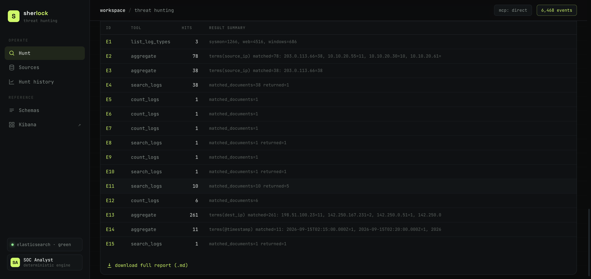

| Member | Matriculation No. | Primary role |
|---|---|---|
| [Name 1] | [Axxxxxxx] | Platform & Ingestion Lead |
| [Name 2] | [Axxxxxxx] | Schema Intelligence Engineer |
| [Name 3] | [Axxxxxxx] | MCP & Tooling Engineer |
| [Name 4] | [Axxxxxxx] | Agentic Hunt Engineer |
| [Name 5] | [Axxxxxxx] | Product, UX & Evaluation Lead |
Code repository: [insert your Git URL here] · Product name: Sherlock
What it is. Sherlock is an AI-assisted threat-hunting capability for a managed security service provider. Today an analyst hand-loads logs and writes a one-off query for every hunt. Sherlock accepts a hunt hypothesis in plain English — for example, “an external actor brute-forced an admin account and established command-and-control” — and returns an evidenced verdict at machine speed.
What it proved. On a self-contained lab of 6,468 events across three log sources, Sherlock reconstructed a full multi-stage intrusion — brute force, successful logon, web-shell initial access, encoded PowerShell, a persistence account, log clearing, and C2 beaconing — and returned a CONFIRMED verdict in under a second, with 100% evidence integrity: every one of the nine findings is tied to the exact query that produced it.
Why it is trustworthy. The core idea is simple: no evidence, no claim. The agent may only touch the SIEM through a Model Context Protocol (MCP) tool surface; every query it runs is written to an evidence ledger with the exact query text and a hit count; and a verifier rejects any conclusion that is not backed by a real result — including a hallucinated citation — before it can reach the report.
What it cannot yet do. It runs on a single-node lab stack without authentication or retention management; its deterministic engine only knows the detection techniques we encoded; and while the LLM engine is open-ended, it costs tokens and adds run-to-run variance that we control but do not eliminate. These are deployment-hardening items, not design gaps.
Sherlock has five layers: ingestion, schema intelligence, the ELK data plane, the MCP tool surface, and the agentic hunt engine, with a dashboard for observability.
log sources ──pull / push / stream──▶ ingestion core
│ (auto-schema: fingerprint → reuse or
│ propose → validate → register)
▼
Elasticsearch: sherlock-logs-{windows,sysmon,web}
+ state indices: schemas · hunts · evidence · ingest-audit
▲ (queries ONLY via tools)
MCP server (stdio): search / aggregate / count / …
▲
hunt engine: plan → query → gather → verify → report
└ evidence ledger (every query + DSL + hit count)
└ verifier (reject unsupported / hallucinated claims)
▼
dashboard (live trace, verdict, findings, ledger) + Kibana| Layer | Responsibility | Key design choice |
|---|---|---|
| Ingestion | Accept logs via pull (dir watch), push (HTTP), stream (syslog UDP) | All three converge on one core: schema → mapping → parse → bulk → audit |
| Schema intelligence | Decide how to parse any source, with no hand-written parsers | Fingerprint-based reuse; LLM or heuristic proposal; validate before use |
| Data plane (ELK) | Store, search, aggregate | Per-type indices; Sherlock’s own provenance also lives in ES |
| MCP tool surface | Expose the SIEM to agents safely | Read-only tools; each returns the exact DSL it ran |
| Hunt engine | Plan and execute the hunt, reach a verdict | Two interchangeable engines (LLM + deterministic), one bundle shape |
| Assurance | Make hallucination unpublishable | Evidence ledger + verifier gate every claim |
The agent decides which tools to call and with what arguments; it cannot reach Elasticsearch any other way. The surface is deliberately read-only, which bounds the blast radius of any agent error.
| Tool | Purpose |
|---|---|
list_log_types | Enumerate sources, counts, time range (coverage) |
get_field_mapping | Field names and types for an index |
sample_logs | Peek at records to understand structure |
count_logs | Quantify a pattern (cheap hypothesis test) |
search_logs | Retrieve the concrete records behind a claim |
aggregate | terms / date_histogram / cardinality / stats |
list_schemas | Inspect registered parsers |
The LLM engine follows a coverage-first contract: enumerate sources, then test the hypothesis quantitatively, then retrieve the evidence, then converge on a verdict — citing evidence ids throughout. The deterministic engine runs a fixed battery of standard SOC detections (each mapped to MITRE ATT&CK) and decides the verdict by which hypothesis-relevant techniques fired. Both feed the same ledger and verifier, so the assurance guarantee is identical regardless of engine.

A detection is only as portable as its schema. The same security event is spelled differently by every SIEM — one event, seven spellings — so a rule written against one product silently matches nothing on another. Sherlock addresses this head-on: it recognises the seven industry schemas, normalises them onto one canonical field set, and watches for the schema drift that breaks detections silently.
| Side | Schema | Origin | How Sherlock parses it |
|---|---|---|---|
| Producer (wire format) | CEF | ArcSight / OpenText | Deterministic CEF parser (escape- and syslog-prefix-aware) |
| LEEF | IBM QRadar | Deterministic LEEF 2.0 parser (delimiter-header aware) | |
| Consumer (normalisation) | CIM | Splunk | JSON schema introspection — no hand-written parser, no API key |
| ECS | Elastic | ||
| OCSF | Open / Linux Foundation | ||
| ASIM | Microsoft Sentinel | ||
| UDM | Google SecOps |
At ingest, each event is mapped onto a canonical field set (prefix
n_) drawn from the schemas’ own field tables, so a single detection
fires identically regardless of origin. For example, the source IP of a failed
logon is written seven different ways yet normalises to one field:
| Canonical | CEF | CIM | ECS | OCSF | ASIM | UDM |
|---|---|---|---|---|---|---|
n_src_ip | src | src | source.ip | src_endpoint.ip | SrcIpAddr | principal.ip |
n_action | outcome | action | event.outcome | status | EventResult | extensions.auth.outcome |
We exported the same brute-force incident in all seven schemas and ran one canonical query over each — it returned the identical result in every index, demonstrating true write-once portability:
query: n_event_id=4625 AND n_user=administrator
AND n_src_ip=203.0.113.66 AND n_action=failure
result: cef 18 · leef 18 · cim 18 · ecs 18 · ocsf 18 · asim 18 · udm 18
(n_time and n_severity also agree across all seven)Schema drift — a source renaming, dropping or retyping a field after a vendor
patch or pipeline change — breaks detections silently: the rule still runs
but matches nothing. Sherlock records a per-source field contract on first ingest
and compares every later batch against it, surfacing a missing or retyped field as
an explicit drift status instead of a silent miss.
Prerequisites: Docker Desktop and uv. From the repository root:
make up # start Elasticsearch + Kibana (builds a patched ES image)
make seed # generate 3 log types and ingest them via auto-schema
make dashboard # open http://localhost:8080
# or simply: make demoNo API key is required — Sherlock runs its deterministic engine by default. To
enable the LLM engine, copy .env.example to .env and set
a provider and key (ANTHROPIC_API_KEY or an OpenAI-compatible
endpoint). The MCP server can also be attached to Claude Desktop as a stdio
server, which lets a general assistant run the same hunts.
| Challenge | Symptom | Resolution |
|---|---|---|
| ES crash on Apple Silicon | Container exits 134; JVM SIGILL at System.registerNatives | ES’s bundled JDK probes the ARM SVE vector length, which Docker Desktop does not expose. We build a patched image swapping in Temurin 21.0.12 (disables SVE gracefully) and pin ES 8.13.4. |
| Cluster turns red | Indices flip read-only; shards unassigned | Small laptop disk hit the 95% flood-stage watermark. We disable disk-based allocation for the lab and cap heaps (ES 768 MB, Kibana 512 MB). |
| MCP SDK churn | Server API changed in mcp 2.x | Pinned mcp<2; the engine uses a real stdio MCP client with an in-process fallback so a live demo never fails on a transport hiccup. |
| False positives from noise | Internal users’ mistyped passwords tripped the brute-force probe | Raised the threshold and scoped “successful brute force” to external source IPs. |
make up.list_log_types before concluding and record it as evidence, so the
report can prove which sources and time window were searched.Each tool call is recorded in the evidence ledger with a stable id
(E1, E2, …), the exact Elasticsearch DSL, a result
summary, and a hit count, and is persisted to the sherlock-evidence
index. A finding must cite evidence ids; the report shows the query inline under
each finding and lists every query in an appendix. Any reader can re-run them.
The engine only proposes a candidate verdict. A verifier then keeps a finding only if every evidence id it cites (a) exists in this hunt’s ledger, (b) came from a query tool (count/search/aggregate), (c) executed successfully, and (d) matched in the claim’s direction — so a multi-stage “A and B” claim cannot pass on A alone, a failed or malformed query never counts as a zero, and a citation to a non-query tool is rejected. A separate reducer then derives the published verdict from the verified findings and real coverage: rejected claims genuinely do not count, “no findings” is never read as proof of absence, and a query failure or incomplete coverage forces inconclusive. Rejected claims are listed in the report, so the guardrail is visible.

To give the hunt real signal, the dataset embeds a deterministic cross-source intrusion (“Operation Nightjar”) in realistic benign noise: an external actor brute-forces the admin account, exploits the web app and drops a web shell, runs encoded PowerShell, beacons to a newly observed domain, creates a persistence account, and clears the security log.
Given the broad hypothesis “Was WIN-APP01 compromised in a multi-stage intrusion?” Sherlock returned CONFIRMED (confidence 95%, integrity 100%) with nine evidence-backed findings spanning the whole kill chain. Each finding’s brute-force-to-access claim, for instance, cites three correlated queries — the failure burst, the last failure, and a logon from the same IP after it:
| Finding | MITRE | Evidence |
|---|---|---|
| Brute force from 203.0.113.66 (38 failures) | T1110 | E2 |
| Brute force led to a successful logon | T1110 → Valid Accounts | E3 |
| External administrator network logon | T1078 | E4/E6 |
| Persistence account created + added to admins (svc_backup) | T1136/T1098 | E5–E8 |
| Security log cleared | T1070.001 | E7 |
| Encoded PowerShell downloader | T1059.001 | E8 |
| Web shell (POSTs to /uploads) | T1505.003 | E11 |
| Web recon / exploitation probes | T1190 | E12 |
| C2 beaconing to 198.51.100.23 / nightjar-telemetry.xyz | T1071/T1571 | E13/E14 |
We ran the identical hypothesis twice against the same immutable dataset and compared the two hunts:
| Metric | Run 1 | Run 2 |
|---|---|---|
| Verdict | confirmed | confirmed |
| Confidence | 0.95 | 0.95 |
| Verified findings | 9 | 9 |
| Evidence integrity | 100% | 100% |
| Queries executed | 12 | 12 |
We report three convergence metrics deliberately separated so that a data change cannot masquerade as query-plan drift, plus a dataset manifest hash captured before and after the runs to prove the input did not change: verified-verdict agreement yes · finding-set Jaccard 1.0 · query-plan Jaccard 1.0 · result Jaccard 1.0 · dataset unchanged true.
Interpretation. The deterministic engine issues a fixed probe battery in a fixed order, so the two runs are byte-identical — the repeatability ceiling, and what makes this mode suitable for audit and detection regression-testing. Its trade-off is adaptivity: it only knows the techniques we encoded. The LLM engine explores adaptively but introduces run-to-run variance; we control that variance with temperature 0, a coverage-first contract, and the evidence gate, which discards speculative claims so that even when the narrative differs, the verified findings converge. Sherlock’s contribution is to separate acceptable narrative variance from unacceptable verdict/evidence variance, and to make the latter measurable.
What we built. An end-to-end agentic hunt platform on ELK that turns a natural-language hypothesis into a verdict where every claim carries its query — with tri-modal ingestion, agentic auto-schema, an MCP tool surface, two hunt engines, and a live console.
What we would build next. (1) Continuous/streaming hunts that watch for a hypothesis to become true; (2) a detection-as-code regression harness on top of the deterministic engine; (3) analyst feedback to calibrate confidence; (4) production hardening — TLS + auth on ES/MCP, index lifecycle management, and multi-node scale.
Limitations. Single-node lab without auth or retention; deterministic engine limited to encoded techniques; LLM engine costs tokens and adds bounded variance. None affect the central guarantee: an unsupported claim cannot reach the report.
Five members, one coherent subsystem each; all contributed to design, integration, and the demo. Ownership indicates the primary author.
| Activity | M1 | M2 | M3 | M4 | M5 | Total |
|---|---|---|---|---|---|---|
| Design & architecture (joint) | 4 | 4 | 4 | 4 | 4 | 20 |
| ELK bring-up + Apple-Silicon fixes | 10 | 1 | 1 | – | 1 | 13 |
| Tri-modal ingestion | 9 | 2 | – | – | 1 | 12 |
| Auto-schema + registry + parsing | 1 | 12 | 2 | – | – | 15 |
| MCP server + tools + client + LLM client | 1 | 1 | 13 | 2 | – | 17 |
| Hunt engine + ledger + verifier + reporter | – | – | 3 | 14 | 1 | 18 |
| Dataset scenario design | – | 1 | – | 1 | 7 | 9 |
| Dashboard + observability | 1 | – | 1 | 1 | 11 | 14 |
| Experiment + evaluation | – | 1 | – | 2 | 6 | 9 |
| Report + pitch + demo prep | 2 | 2 | 2 | 2 | 9 | 17 |
| Integration & testing (joint) | 3 | 3 | 3 | 3 | 3 | 15 |
| Total | 31 | 27 | 32 | 31 | 43 | 159 |
A representative slice of the evidence ledger from the reconstruction hunt.
Each row is one query the agent ran; the full DSL is stored in the
sherlock-evidence index and shown inline in the generated report.
| ID | Tool | Hits | Summary |
|---|---|---|---|
| E1 | list_log_types | 3 | sysmon=1266, web=4516, windows=686 |
| E2 | aggregate | 78 | terms(source_ip) on 4625: 203.0.113.66=38, … |
| E3 | count_logs | 1 | 4624 success from the brute-forcing IP |
| E11 | search_logs | 10 | POSTs to /uploads/nightjar.php |
| E13 | aggregate | 21 | terms(dest_ip) external: 198.51.100.23=11, … |
| E14 | search_logs | 1 | DNS query for nightjar-telemetry.xyz |
Live trace of the same hunt:
